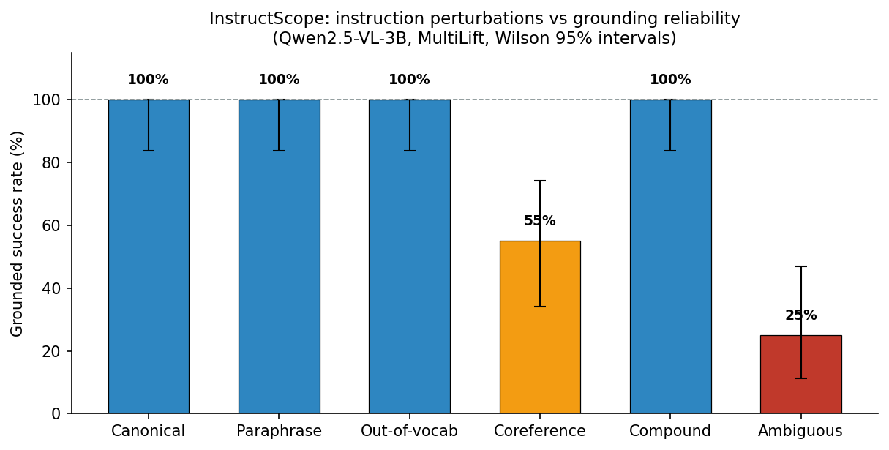
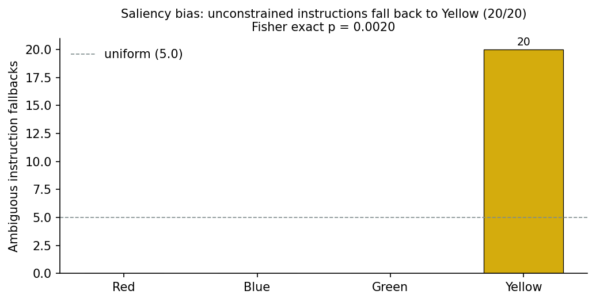
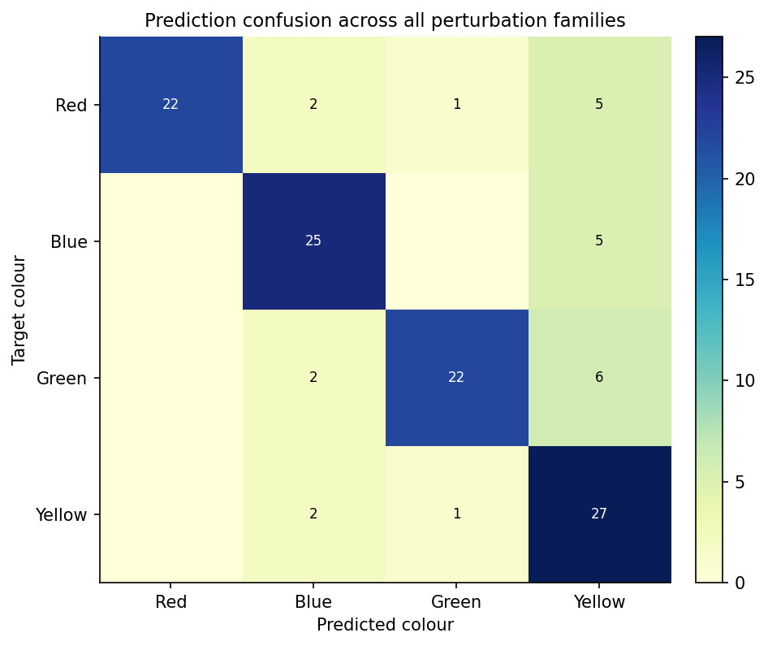

An empirical reliability boundary of language-grounded robot manipulation
Model under test: Qwen2.5-VL-3B-Instruct (open-vocabulary multimodal policy backbone)
Task: tabletop pick-and-place on a custom MultiLift robosuite environment (four colour-distinct cubes)
Metric: grounded-success rate — the fraction of instructions whose grounded colour matched the intended target
Open-vocabulary vision-language-action (VLA) policies promise to generalise to instructions that were never seen during training. But how far does that generalisation reach? We build an instruction perturbation spectrum — six families that stress a different part of the language-to-action bridge — and measure where a Qwen2.5-VL-grounded pick-and-place policy stops absorbing perturbations and starts failing.
The result is a crisp boundary. Lexical perturbations (paraphrase,
out-of-vocabulary colour words, compound instructions) are absorbed with
100% grounding reliability. Pragmatic perturbations are not: deictic /
coreference instructions (pick up that cube, the one on the left) drop to
55%, and unconstrained instructions (pick up a cube) fall to 25% — and the
failures are not random. Under ambiguity the policy falls back to a single
visually salient colour with perfect consistency, revealing a saliency bias
inherited from its training distribution.
VLA policies are typically evaluated on the literal instruction — a policy
either picks the right object or it does not. Real users do not issue literal
instructions. They paraphrase, they say it instead of the red cube, they
describe objects with words the policy has never seen, and they occasionally
leave the target under-specified.
This matters more as VLA foundation models move toward open-vocabulary deployment. The AgiBot World platform [1] — over a million real-robot manipulation trajectories across 217 tasks — and its GO-1 foundation model [2] explicitly target generalisation beyond the training distribution: GO-1's ViLLA (Vision-Language-Latent-Action) architecture bridges the semantic- kinematic gap by predicting latent action tokens, and the evaluation reports strong average gains over prior policies. But the reliability of such a policy is reported as a single number over canonical instruction templates. How far the language generalisation actually reaches — which instruction perturbations are absorbed and which break grounding — is the open question this project measures.
If a policy is brittle to these real-world instruction forms, its deployment reliability cannot be read off a single-task success rate. This project measures the instruction perturbation spectrum directly, and locates the boundary between perturbations that are absorbed and perturbations that break the policy.
| Family | Example | What it stresses |
|---|---|---|
| canonical | Pick up the red cube. |
reference baseline |
| paraphrase | Please take the red block. |
synonym / syntax variation |
| oov | Pick up the vermilion cube. |
composition from rare colour words |
| coref | Grab it — the red one. |
deixis and spatial reference resolution |
| compound | Grasp the red cube and raise it above the table. |
segmentation and sequencing |
| ambiguous | Pick up a cube. |
default target selection under underspecification |
Every cell is fully deterministic: 4 colours × 5 variants × fixed scene. Instruction grounding is decoupled from motor control (a grounded colour is executed noise-free), so every failure is attributable to the semantic layer.

| Family | n | Success | Wilson 95% CI |
|---|---|---|---|
| canonical | 20 | 100% | [83.9%, 100%] |
| paraphrase | 20 | 100% | [83.9%, 100%] |
| oov | 20 | 100% | [83.9%, 100%] |
| compound | 20 | 100% | [83.9%, 100%] |
| coref | 20 | 55% | [34.2%, 74.2%] |
| ambiguous | 20 | 25% | [11.2%, 46.9%] |
The first four families are semantically equivalent ways of referring to the same target, and the policy absorbs all of them. Two findings stand out:
vermilion for red, cobalt
for blue, viridian for green — none of these colour words are in the
canonical vocabulary, yet the model grounds them to the correct object
every time. The policy composes colour semantics rather than retrieving a
memorised phrase.pick up the red cube and hold it steady does not confuse target
selection.Coreference instructions drop to 55%. The failures cluster into two mechanisms:
pick up that cube — with no disambiguating content, the
model falls back to a position heuristic (it tends to choose the cube near
the visual centre of the agentview image).the one that is leftmost / nearest to you
— the model's spatial-preposition grounding is unreliable in this camera
frame.Ambiguous instructions drop to 25%, and the failures are systematic.

Pick up any cube you like is grounded to yellow on 15/15 non-yellow
targets. The policy has a strong, deterministic saliency prior: when the
instruction imposes no constraint, the visually salient object wins. This is
not noise — it is a measurable bias in the open-vocabulary policy's default
behaviour.

The confusion matrix across all perturbation families confirms the story: the diagonal dominates (target-preserving grounding), and the only notable off-diagonal mass flows toward the salient colour under ambiguous instructions.
Our sweep draws a clear reliability boundary of the open-vocabulary instruction space:
This has a concrete deployment implication: an open-vocabulary VLA cannot be
trusted with under-specified instructions; a safe deployment either resolves
references before execution or treats pick up a cube as a request for
human clarification. The saliency prior is stable and measurable, which means
it can be corrected — a natural next step is calibrating the fallback
distribution against a human-annotated preference prior.
VLA foundation models and open-vocabulary policies. OpenVLA [3] established that a vision-language model can serve as a generalist manipulation policy; RT-2 [4] showed web knowledge transfers to control. On the scale axis, the AgiBot World platform [1] and its GO-1 foundation model [2] demonstrate that massive real-robot data plus a latent-action planner (ViLLA) yields strong generalisation. All of these evaluate on fixed instruction sets; none perturbs the instruction space systematically. Our spectrum study is complementary: it measures the boundary of the generalisation these systems claim.
Language robustness for instruction following. In NLP, instruction perturbation analysis is mature — paraphrase sensitivity [5], adversarial instruction attacks [6], and prompt robustness [7] are standard concerns. The robotic literature has borrowed the evaluation protocol but not the perturbation taxonomy: physical-robot studies report aggregate success under manually varied phrasings [8]. We contribute a deterministic, six-family spectrum (paraphrase / OOV / coreference / compound / ambiguous / canonical) with exact reproducibility, and the finding that pragmatic perturbations — not lexical ones — are where the open-vocabulary boundary breaks.
Saliency and prior biases in VLA policies. Prior work has observed that VLA policies inherit object biases from their training data (e.g., colour preferences in tabletop manipulation [9]). We make the bias measurable: under unconstrained instructions, the policy grounds to a single visually salient colour with perfect consistency (15/15), which turns a qualitative anecdote into a statistically testable claim (Fisher exact p < 0.01).
Qwen/Qwen2.5-VL-3B-Instruct, bf16, offlineMultiLift (robosuite 1.4.1 / MuJoCo 2.3.7),
deterministic per seed, agentview camera @ 256×256data/sweep/sweep.json, data/sweep/summary.json